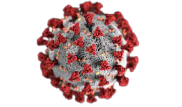

What is a Coronavirus?

Coronavirus disease (COVID-19) is an infectious disease caused by the SARS-CoV-2 virus.
Most people infected with the virus will experience mild to moderate respiratory illness and recover without requiring special treatment.
However, some will become seriously ill and require medical attention. Older people and those with underlying medical conditions like cardiovascular disease, diabetes, chronic respiratory disease, or cancer are more likely to develop serious illness.
Anyone can get sick with COVID-19 and become seriously ill or die at any age.
The best way to prevent and slow down transmission is to be well informed about the disease and how the virus spreads.
Protect yourself and others from infection by staying at least 1 metre apart from others, wearing a properly fitted mask, and washing your hands or using an alcohol-based rub frequently.
Get vaccinated when it’s your turn and follow local guidance.
The virus can spread from an infected person’s mouth or nose in small liquid particles when they cough, sneeze, speak, sing or breathe.
These particles range from larger respiratory droplets to smaller aerosols.
It is important to practice respiratory etiquette, for example by coughing into a flexed elbow, and to stay home and self-isolate until you recover if you feel unwell.
Data of Affected from Covid-19
Most people who have coronavirus disease 2019 (COVID-19) recover completely within a few weeks.
But some people — even those who had mild versions of the disease — continue to experience symptoms after their initial recovery.
Confirmed cases and deaths, which are widely considered to be an undercount of the true toll,
are counts of individuals whose coronavirus infections were confirmed by a molecular laboratory test.
Probable cases and deaths count individuals who meet criteria for other types of testing, symptoms and exposure,
as developed by national and local governments.
A vaccine can prevent you from getting the COVID-19 virus or prevent you from becoming seriously ill if you get the COVID-19 virus.
After you are vaccinated, you can more safely return to many activities that you might not have been able to do because of the pandemic.
However, if you are in an area with a high number of people with COVID-19 in the hospital and new COVID-19 cases,
the CDC recommends wearing a mask indoors in public, whether or not you're vaccinated.
The CDC recommends wearing the most protective mask possible that you'll wear regularly, fits well and is comfortable.